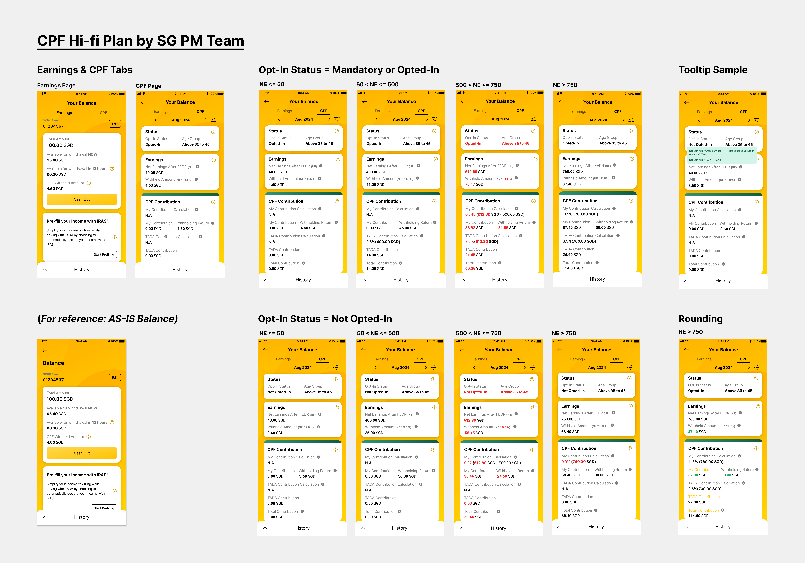
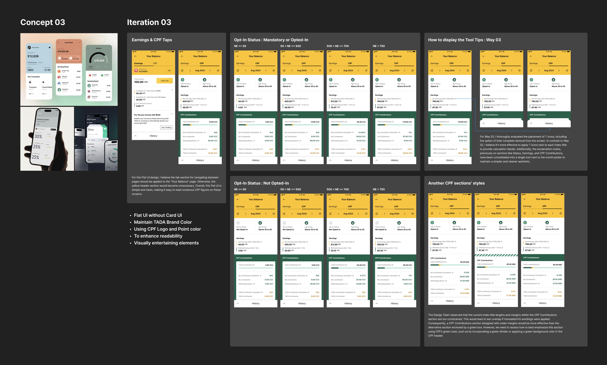
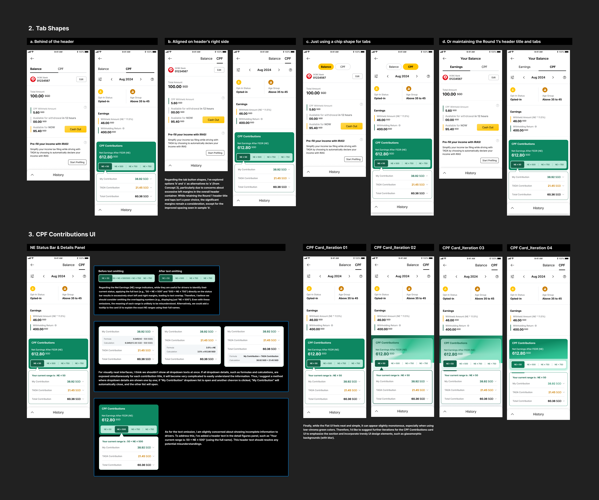
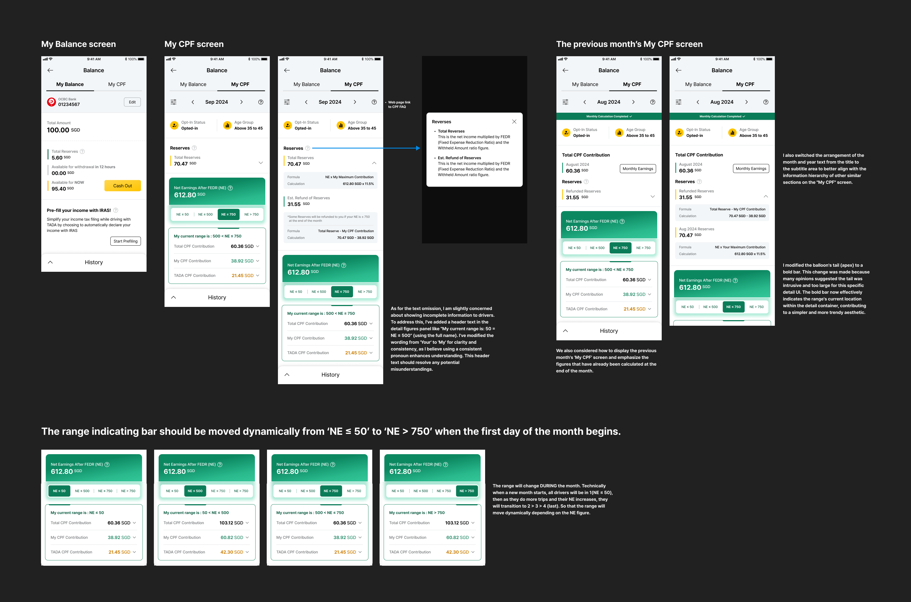
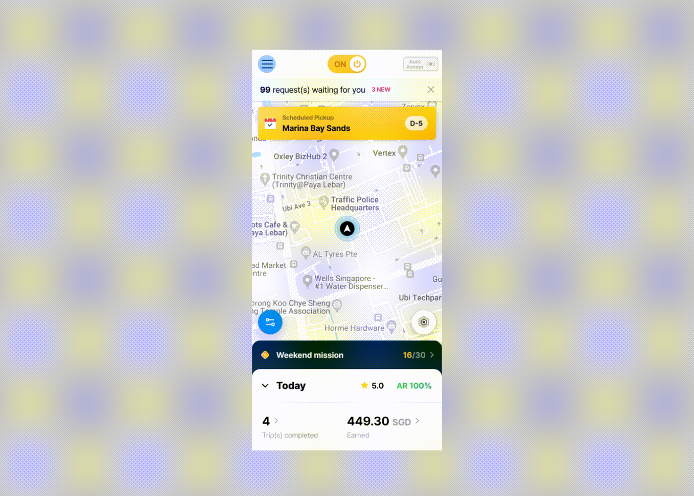

Overview
싱가포르의 새로운 플랫폼 노동자 정책에 대응하기 위해 Driver App에 CPF 기능을 새롭게 도입한 프로젝트입니다. 운전자들이 CPF 예상 적립금과 납부 정보를 쉽게 확인할 수 있도록 새로운 Balance 화면과 CPF 전용 화면을 설계했으며, 정책 변경 사항을 서비스 경험 안에서 자연스럽게 전달하는 것을 목표로 했습니다.

Challenge
본 프로젝트에서 가장 큰 과제는 복잡한 정책과 계산 로직을 운전자들이 쉽게 이해할 수 있는 경험으로 만드는 것이었습니다. 또한 정책 시행 일정이 매우 촉박했기 때문에 짧은 기간 안에 PM, 개발팀과 긴밀하게 협업하며 UI를 완성해야 했습니다.

Solution
초기 단계에서는 여러 가지 레이아웃과 정보 구조를 탐색하며 다양한 디자인 방향을 제안했습니다. Global PM 및 디자인팀과 리뷰를 반복한 끝에 최종 방향성을 선정하고 이후 모든 화면의 기준으로 활용했습니다.

선정된 레이아웃을 기반으로 세부 컴포넌트를 개선했습니다.
• 상단 Summary 영역
• Tab 구조
• Status Icon
• CPF Contribution Screen
• Tooltip
• Dropdown Interaction
CPF 예상 적립금을 운전자들이 직관적으로 이해할 수 있도록 Net Earnings 구간별 정보를 Tab 구조로 재설계했습니다. 또한 CPF 핵심 정보를 강조하기 위해 Glassmorphism 스타일과 브랜드 컬러를 활용하여 정보의 우선순위를 명확하게 표현했습니다.
최종 UI는 Driver App의 Balance 기능 안으로 통합되었습니다. 기존 Balance 화면에는 CPF 정보를 함께 제공하고, 별도의 My CPF 화면을 추가하여 운전자들이 자신의 CPF 현황을 한눈에 확인할 수 있도록 구성했습니다.

Outcome
• 싱가포르 신규 정책 대응 기능 구축
• Driver App 신규 CPF 화면 설계
• Balance 화면 정보 구조 개선
• 복잡한 정책 정보를 이해하기 쉬운 UX로 전환
• 기존 Design System과 자연스럽게 통합

What I Learned
CPF는 처음 접하는 제도였기 때문에 정책 문서와 계산 로직을 먼저 충분히 이해하는 과정이 필요했습니다. 특히 이번 프로젝트에서는 UX 설계뿐 아니라 실제 계산 데이터를 연결하기 위해 Backend 개발자와 직접 협업하며 정책이 서비스 안에서 어떻게 구현되는지 함께 논의했습니다. 복잡한 정책이라도 사용자는 단순하고 직관적으로 이해할 수 있어야 한다는 점을 다시 한번 경험한 프로젝트였습니다. 또한 제한된 일정 속에서도 PM, 디자이너, 개발자와 긴밀하게 협업하며 빠르게 의사결정을 내리는 과정의 중요성을 배울 수 있었습니다.